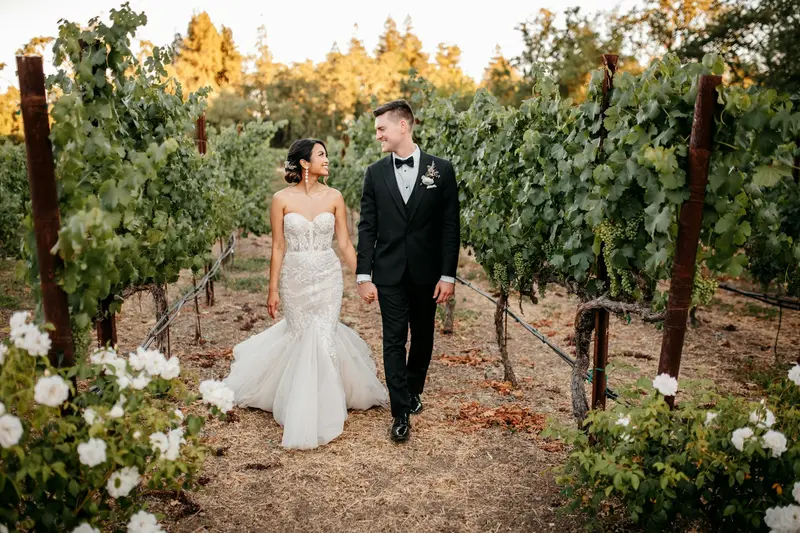
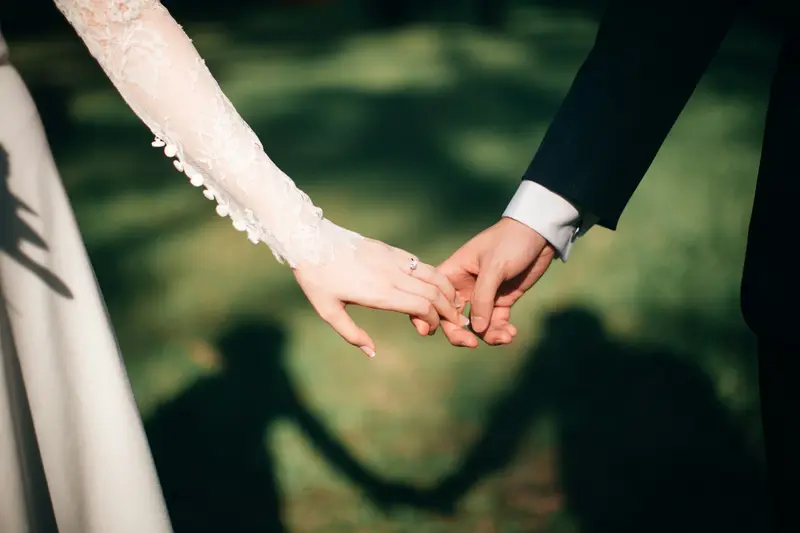
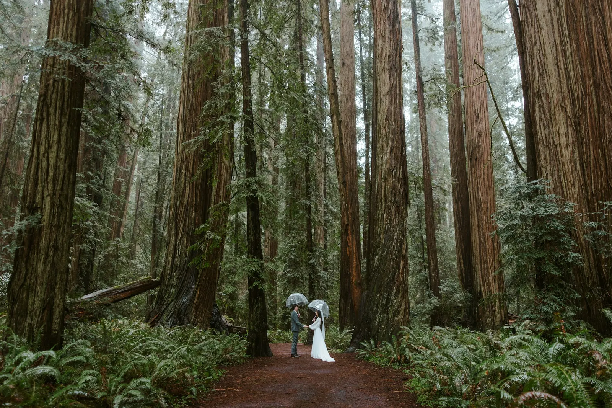

Session
Engagement
fromR$ 1,900
- Up to 3 hours of shooting
- One or two locations of your choice
- Outfit guidance
- 120 edited photos
- Delivery within 20 days

Davi Moreira · wedding photography
Natural light, gentle direction and attention to everything that happens between one posed photo and the next. In São Paulo and wherever you say yes.
Check availabilityPortfolio
A recent selection of weddings, elopements and engagement sessions. Each full gallery has between 600 and 1,200 edited photos.







About
I've been photographing weddings for eleven years and I still get emotional at the first look, the best man's speech and the dance floor at two in the morning.
I started by photographing a friend's wedding with a borrowed camera. Since then there have been more than two hundred weddings, from ceremonies for twenty people on the beach to parties for five hundred guests. The name Luz de Domingo ("Sunday Light") comes from the light I love most: the soft late-afternoon light that makes everyone look beautiful without trying.
I always work with a second photographer and deliver everything hand-edited, one photo at a time.
Davi Moreira
How I photograph
I choose the times and corners of the venue with the light in mind. Flash only when the party calls for it, and even then it's discreet.
No stiff poses. I give you a nudge, a conversation, a path to walk. You do the rest yourselves.
Grandma's hand, the nerves before walking in, the cousin asleep on a chair. That's what you'll want to see again in twenty years.
“The best photo of a wedding is almost never the one that was planned.”
Packages
Starting prices for the city of São Paulo. For other cities, we add travel and accommodation. Sample prices.
Session
fromR$ 1,900
Wedding
fromR$ 5,400
Wedding
fromR$ 8,200
Couples who book full coverage get 30% off the engagement session.
How it works
No surprises along the way. You know what happens at each step, and when.
Start with your dateYou send the date, the city and the kind of celebration. I confirm availability the same day.
About 40 minutes for me to get to know you, understand the wedding and answer your questions.
Digital contract and a 30% deposit. The rest can be paid in installments up to one month before the wedding.
Together we build the day's timeline and the family photo list. If there's an engagement session, this is when it happens.
I arrive early, get to know the venue and sync with the planner. All you need to do is enjoy it.
A 50-photo sneak peek within 7 days. The full gallery within 60 days. The album right after you choose your photos.
In their words
“We opened the gallery and cried all over again. There are photos of things we didn't even remember happening.”
“Davi is so relaxed that after ten minutes nobody remembered there was a camera around.”
“We booked full coverage and the album turned out even more beautiful than we imagined.”
Sample testimonials: replace them with your couples' words.
FAQ
Ideally 8 to 12 months, especially for Saturdays between September and December. But it's always worth asking: sometimes a date opens up.
Yes, in any city in Brazil and abroad. Travel and accommodation are added to the quote, with no extra fee beyond that.
All the good ones. I make the selection and edit them one by one. You receive the full gallery in high resolution, with no watermark.
No, I focus only on photography. But I can recommend partner videographers I work well with on the same day.
We adapt. Rain makes for beautiful photos, and I always bring clear umbrellas. For engagement sessions, we reschedule at no cost.
30% when booking the date and the rest in installments by Pix or card, fully paid up to 30 days before the wedding.
2026 and 2027 calendar
I photograph at most one wedding per weekend. Send me your date and I'll reply the same day.